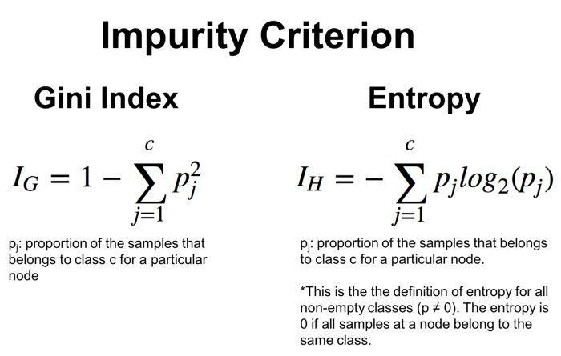
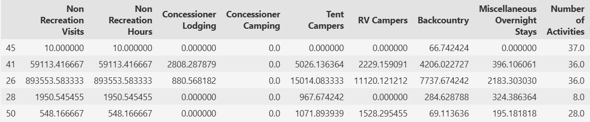
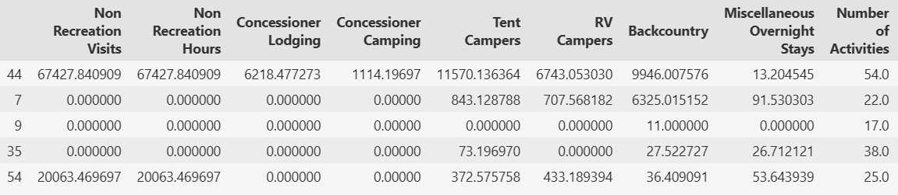
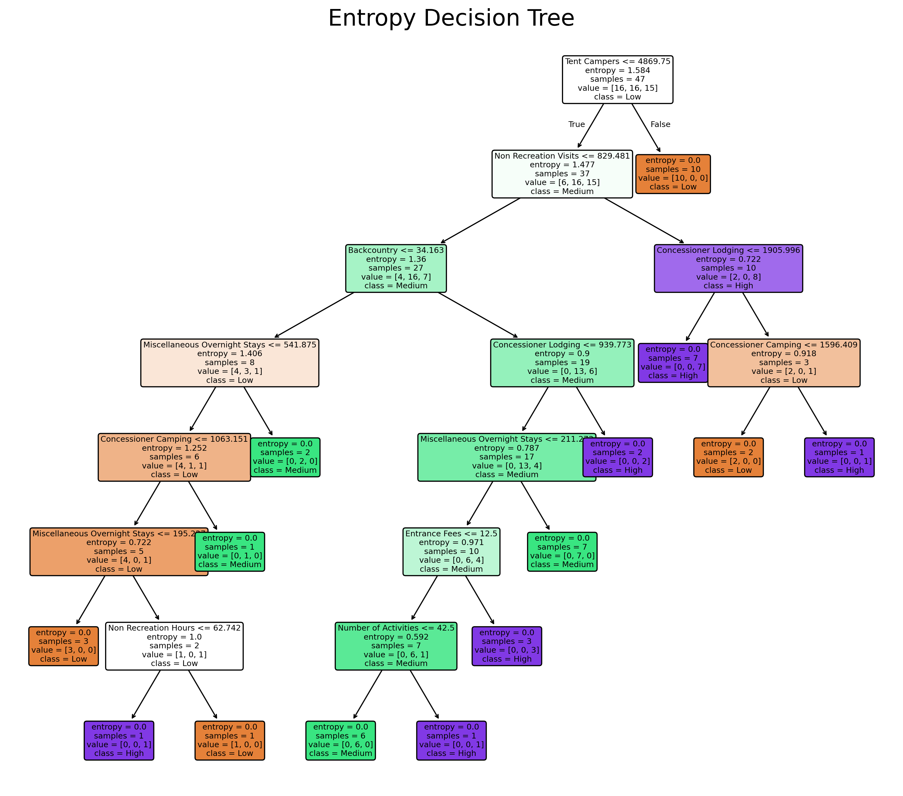
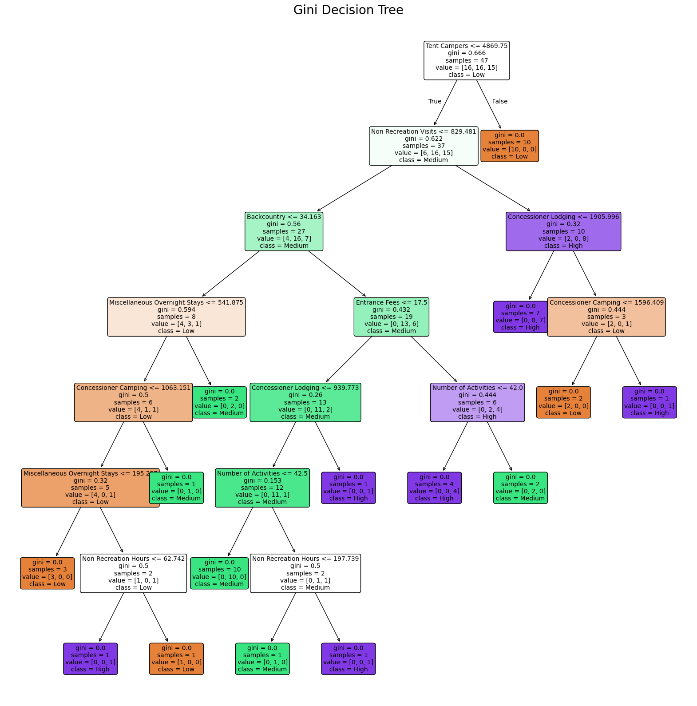
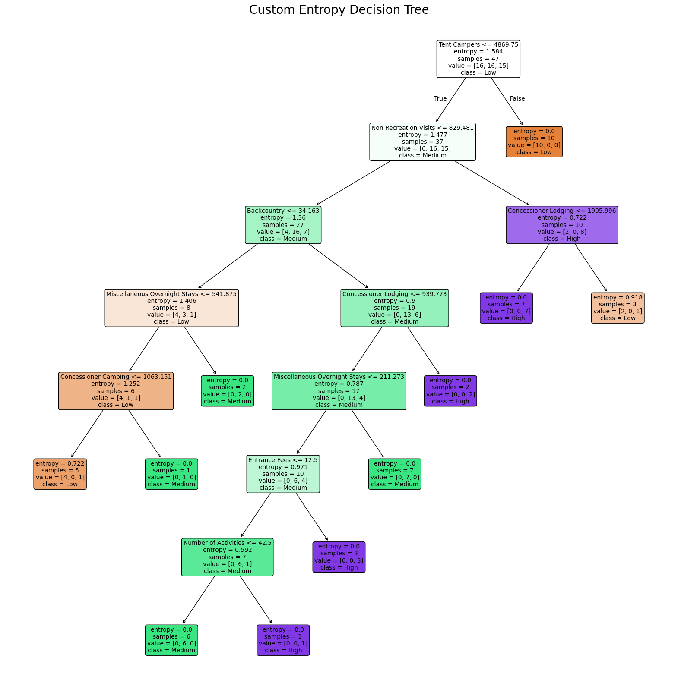
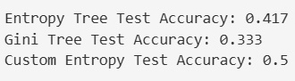
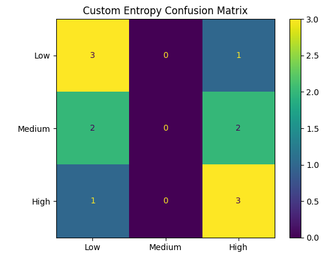

National Park Crowding Analysis
Decision Trees
A Decision Tree is a supervised machine learning algorithm used for both classification and regression tasks that breaks down complex datasets into predefined categories or numerical targets using a sequential series of tree-like rules. To determine the most effective feature to split the data at each node, the algorithm calculates and compares data using mathematical metrics known as Entropy or Gini and ultimately selects the split that yields the highest Information Gain by reducing overall data noise. For example, evaluating a small group of national parks with mixed visitation levels involves measuring the baseline parent entropy and comparing it to the weighted entropy of the child nodes after splitting on a feature like entrance fees. The difference between these values provides the information gain score that determines the "goodness" of that split. This algorithm makes the locally optimal choice at each step. Since continuous numerical features offer an infinite number of split points, a tree can scale to an infinite depth if strict stopping parameters are not enforced.
To figure out the absolute best questions, the algorithm uses Entropy or Gini to measure how mixed up a group of data is at any given point. While Entropy uses logarithmic scales to find pure groups, Gini calculates the probability of misclassification and can be faster. The algorithm then calculates Information Gain, which measures the actual drop in mix-up after a split. It always makes the best choice by selecting the split that clears up the most confusion.



Data Preparation
The dataset was aggregated by park name with one row representing each national park. To create labeled data for supervised learning parks were classified into Low, Medium and High visitation categories using Recreation Visits. Because these labels were derived from visitation data, Recreation Visits and Recreation Hours were excluded from the predictor variables to prevent data leakage. The model used recreation, lodging, camping, overnight stay, activity and entrance fee characteristics to predict visitation level.
The data was split into training and testing sets using an 80/20 split with train_test_split. First, the features were split from their labels and “Crowding Levels” was created by grouping recreation visits into Low, Medium and High categories. Stratification was done so each class is represented in both datasets. The model was trained on the training set and then evaluated on the testing set. This was done to verify the results reflect how good the model performs on new and unseen data.


The training and test data are disjoint because this makes sure that the model will work on unseen data. If they were not disjoint, the model would not work on new data and potentially be biased
Results
To see how well the Decision Tree modeling went, an accuracy score was conducted for three different types of decision trees. The first is an entropy decision tree, the second is a gini decision tree and the third is another entropy tree with a higher set threshold to rule out overfitting.

This decision tree uses the entropy criteria to measure node impurity. This criterion calculates the mathematical randomness of the data using a logarithmic scale. It runs without any depth limits or restrictions for splitting and it continues to branch until every single leaf node achieves an entropy score of zero.

The second decision tree uses the Gini impurity criteria that measures the probability of a data point being misclassified based on the class distribution in that node. It also runs without structural limits and generates splits entirely by decreasing misclassification probability rather than calculating information gain through logs.

The third decision tree uses the entropy criteria but has a custom hyperparameter set at a min_impurity_decrease threshold of 0.06. The model tests possible splits and completely stops growth of a branch if the next proposed split fails to improve the total tree impurity by at least 6%.

From the accuracy scores, we can see that the entropy model with the custom threshold set had the highest accuracy, at 0.5 or 50%.

For the Decision Tree analysis results, the supervised classification system could classify national parks into different levels of visitation: 'Low' visitation, 'Medium' visitation and 'High' visitation better than random guessing. From the report above, the accuracy level is 0.5 or 50%. Since random guessing would have had accuracy of 33%, the model performed better than chance, but performed worse than Naive Bayes, which had a score of 58.3%. The first row shows that 3 'Low' visitation parks were correctly predicted as 'Low', none were incorrectly predicted as 'Medium' and 1 'Low' visitation park was incorrectly predicted as 'High'. The second row shows that none of the 'Medium' visitation parks were correctly classified as 'Medium'. Two were wrongly classified as 'Low' and 2 were wrongly classified as 'High'. The last row shows that 3 'High' visitation parks were correctly identified, 1 was wrongly classified as 'Low', and none were wrongly classified as 'Medium'.
Conclusion
The Decision Tree analysis demonstrates that national park crowding levels can be partially predicted by looking at activity profiles, lodging and camping characteristics. The test accuracy of 50% shows that the model reveals a relationship between park use assets and visitor traffic that does better than random chance. However, the breakdown of the predictions states that these patterns are heavily overlapped and it is seen in the middle range of visitation. The algorithm failed to identify any 'Medium' visitation parks and split them evenly between the 'Low' and 'High' categories instead. It is clear that static features cannot be the only ones needed to forecast park crowding levels. Future models could benefit from incorporating more features.